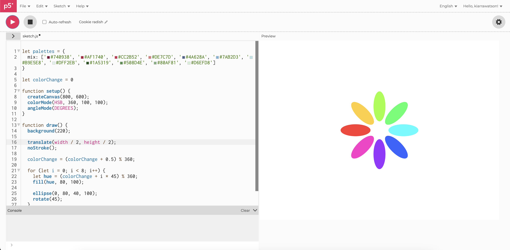
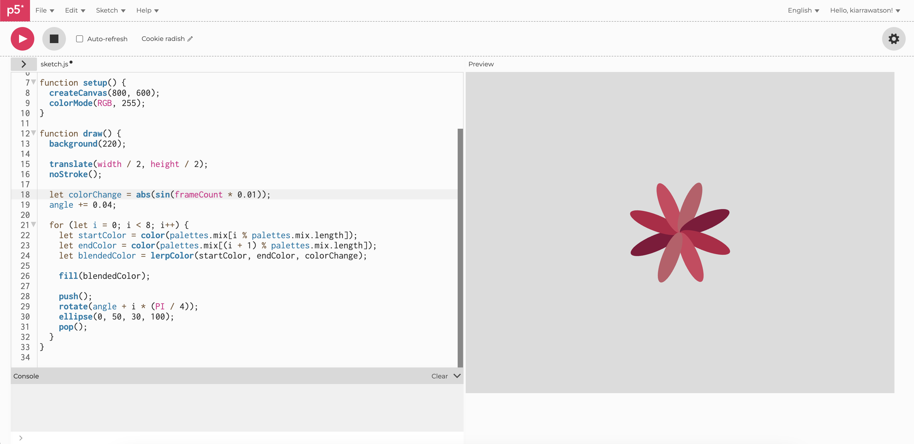
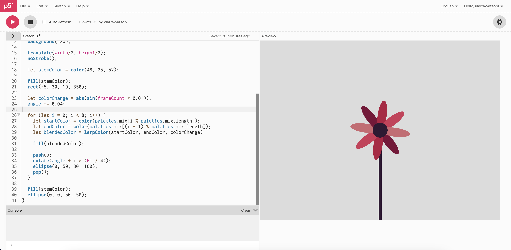
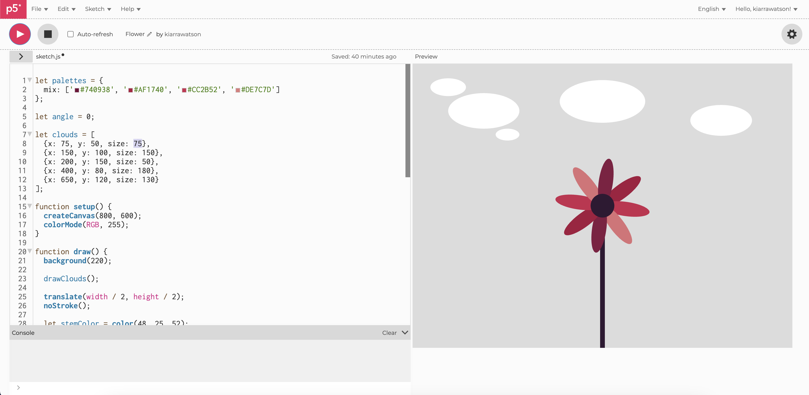
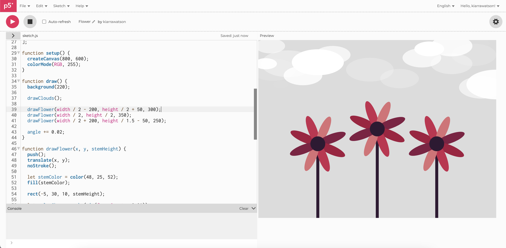
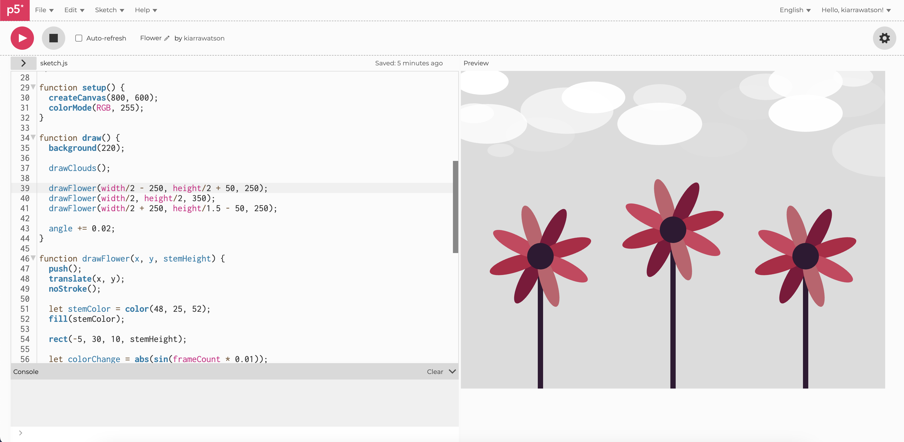

Created foundational setup with canvas, drawing, and color changer functions. Experimented with different color palettes and shapes to get a flower shape.

Added frame variable and sine function to give the flower a cyclical color change. Also added a loop and color array that blends the colors together. Added centered rotation to the flower petals.

Made a rectangular stem with a declared color value. Added a ellipse center with the same color as the stem.

Began implementing cloud shapes. Added cloud draw function and experimented with X & Y placement along with size.

Created a draw flower function to add more flowers with placement control for each element. Added a sine wave to the clouds that changes the opacity over time.

Finally, slightly adjusted the left and right flowers to be further away from the center flower.